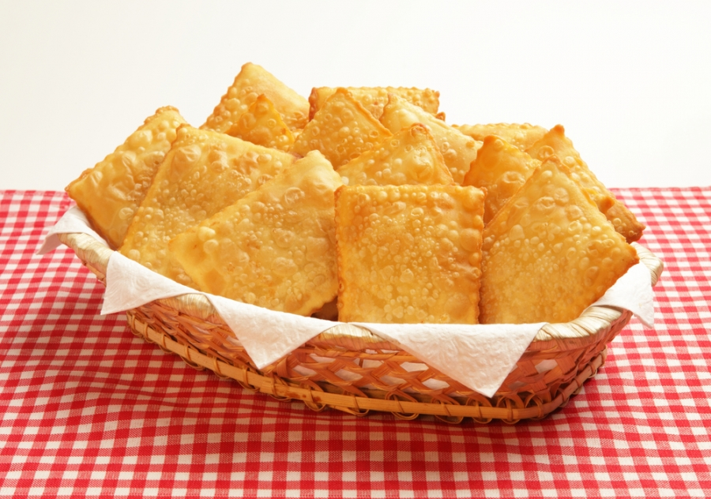
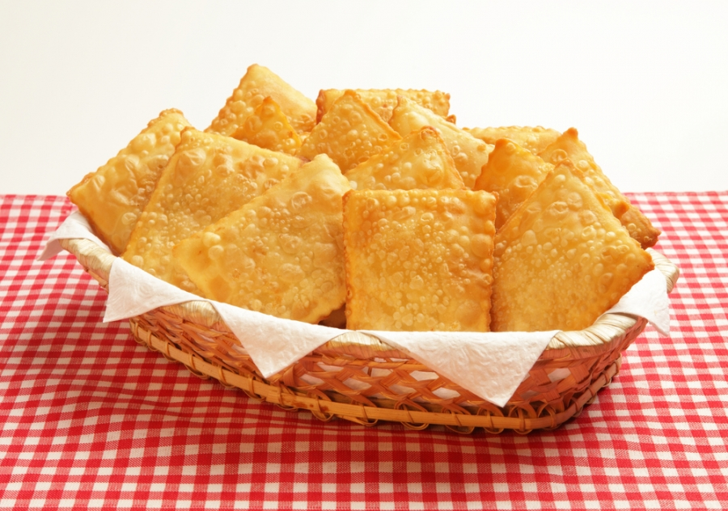

CHING LING FOOD
O restaurante Ching Ling Food foi recentemente fundado, no ano de 2015,
na cidade de São Paulo, Bairro Liberdade, pelo antigo dono(Jorge Jhonson Braga da Silva Mec Flyer).
atualmente estamos localizados na R. Santa Eulália, 86, Bairro Santana
São Paulo - SP. Temos a proposta de oferecer deliciosos pasteis, por um preço justo, também oferecemos bebidas variadas etc.
- Voltar - |